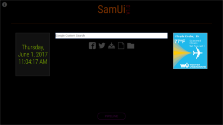
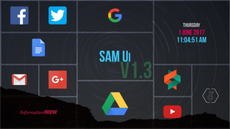
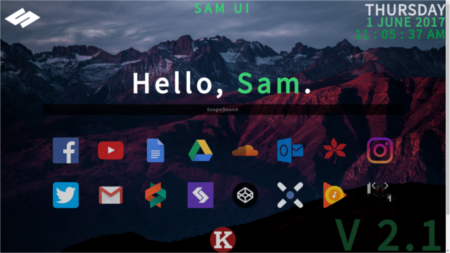

May 28th, 2017 - June 1st, 2017
"Sam Ui," or Sam User Interface, was a project I had originally started in November of 2015. I wanted to make a website that could act as a homepage for all of my browsers, providing quick access to the time, date, temperature, of my surroundings, as well as quick links to commonly used websites. This is shown below.
In my first model, I arranged items in a specific way, providing a Google seach bar in the top center for quick search access, common links below using a vector font, with the time and temperature on either side of the search bar. I determined that this setup was inefficient and ineffective forvarious reasons. First, the color scheme was very dry and the webpage was empty. Second, the icons listed below were few and non-representative of the target link. Finally, the temperature could only display when my devices were connected to the internet, which was not always the case. I realized I needed to completely redesign my website.
My second major redesign of Sam Ui came around in March of 2016. I completely scrapped the idea and started over, utilizing the idea of using a grid form for all of my links. I removed the temperature and search bar. I made each grid link different sizes, depending on how frequently I used each item. I also added more items, such as social media and Google apps. Finally, I added an aesthetically pleasing background.
The grid layout was formed using the Gridster.js plugin.
As I prepared to go off to college, I decided to reshape my user interface once more to update and restructure for easier application. I decided to reapply a search bar with autofocus for speed and ease. I decided to add a little more personal flavor to the interface with a short and concise welcome message. Below this, I kept the grid structure but altered the size and defining lines around each icon. I removed many icons and used newer icons of social media, college links, music, and many web design online apps. The result is pictured below.
